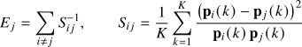

1Separation Is a Riesz Energy: How Many Environments Does ICA Need?
NewPreprint2026 · submitted to ICML 2027
* Equal contribution. † Corresponding author.
Central result

Second-order statistics see source j only through its signature, the vector pj(1),…,pj(K) of its variances across the environments. Separating it costs the Riesz 2-energy of this point among the signatures: the sum, over the other sources, of inverse pairwise Fisher informations.

The dimension law for well-spread signatures. Signatures live in K − 1 dimensions, so what counts is the dimension the configuration spans, not the number of environments.
The question
Independent component analysis recovers independent sources from a linear mixture, but i.i.d. samples of Gaussian sources determine the mixing only up to a rotation. Diversity rescues them: if the source variances change across K environments, be they segments of a nonstationary recording, time lags or datasets, the covariances share the mixing and the sources become identifiable from second-order statistics alone. Existing results are qualitative. They say when identification is possible, not how many samples it takes or which environments to collect, and the dependence on the number of components was open. The paper answers those questions with one geometric quantity, the Riesz energy of the signatures.
Results
- Theorem 1 (Separation costs a Riesz energy). For Gaussian sources and every n and d, no estimator in the orthogonal group recovers the j-th mixing direction with worst-case squared-angle risk below c Ej/(n + Ej). The energy is a sum of inverse pairwise Fisher informations, so the geometry of the signatures, not the number of environments, sets the difficulty.
- Theorem 2 (Attainment by a quadratic pencil). A spectral estimator, the bottom eigenvector of Σk wk(Σk − pj(k)I)2, a matrix that vanishes only along source j, attains Ej/n up to a constant for every mixing, uniformly in d, once n ≳ K(d + log n)/Smin, and it may estimate the whitening from the data. A grid of such matrices also finds the signatures, given a lower bound s0 ≤ Smin (Theorem 3). In this regime the energy is the minimax rate (Corollary 1).
- Theorem 4 (Dimension, not number). Counting how many signatures lie at each distance from pj gives Ej ≈ d2, d log d and d for K = 2, 3 and K ≥ 4 well-spread environments. Combined with Theorem 1, n ≳ d2, d log d and d samples are necessary for every configuration (Corollary 2), and K ≈ log d well-designed environments make d log d samples suffice. Eight environments whose signatures lie on a line behave like two.
- Theorem 5 and Proposition 2 (Projecting versus probing). The eigenvectors of one linear combination Σk αkΣk, as in AMUSE, generalized eigenproblems and random pencils, have a first-order error whose mean over sources is ≳ d2/n for every K: the combination projects the signatures onto a line, where gaps shrink like 1/d. Probing one signature at a time avoids this, and the first-order error of joint diagonalization is again of Riesz type.
Evidence
At n = 400d, from d = 8 to 128, the mean row error of joint diagonalization grows from 0.14 to 0.52 for K = 2 and from 0.072 to 0.14 for K = 3, but stays between 0.018 and 0.022 for K = 8. For K = 4 the error stays within 0.86–1.09 times the first-order prediction up to d = 512. With K = 8 environments at n = 1600d and signatures confined to a subspace of dimension 1, 2, 3 or 7, the error follows the dimension: from d = 8 to 256 it grows from 0.055 to 0.68 in dimension 1 and stays near 0.049 and 0.035 in dimensions 3 and 7. Two configurations with the same smallest divergence but energies 3.8 times apart have errors 4.1 times apart.
The sample size at which the error reaches 0.1 is 92–110 d for K = 8 and 188–205 d for K = 4, from d = 16 to 512, so n/d barely grows with d; a threshold that scaled as the proved bound would instead multiply n/d by 2.7 and 10.1. On fixed K = 4 lattices the mean error reaches 0.1 at 360–490 d from d = 27 to 1000. On identical data (K = 8, n = 400d) one linear pencil degrades from 0.47 to 0.84 while joint diagonalization and the quadratic pencil of Theorem 2 stay flat; as an initialization the pencil costs nothing.
On 813 Human Connectome Project subjects with d = 200 cortical components and eight environments (seven tasks and rest), the energy ranks the split-half discrepancies of the components (Spearman 0.89, against 0.72 for the nearest-neighbour gap alone) but does not predict their size: with 400 subjects per half the mean discrepancy is 0.723 against a predicted 0.118, and a floor of 0.59 carries most of the ranking. Restricting to two environments makes the energy 53 times larger. The paper is explicit about the limits: the theorems assume Gaussian sources and equal environment sizes, the grid needs a known lower bound on the smallest divergence, the gap between necessary and sufficient sample sizes is open for fixed K, and practical algorithms are covered at first order only.
Table 1 of the paper: the environment law
| Quantity | K = 2 | K = 3 | K ≥ 4 | K ≈ log d |
|---|---|---|---|---|
| Energy Ej | d2 | d log d | d | d |
| Necessary samples | d2 | d log d | d | d |
| Proved sufficient | d3 | d2 | d(K+1)/(K−1) | d log d |
| One linear pencil | ≳ d2/n, for every K | |||
Orders in d for well-spread signatures; the necessary row holds for every configuration, and the sufficient row is for equal environment sizes with known signatures. Constants depend on K, on a bound on the signatures, and on the spreading constants.
![Four panels: signatures as points in signature space, with inverse-square interactions to one source in blue and the projection of a linear pencil onto a line in red; mean row error of joint diagonalization against dimension for K equal to 2, 3, 4 and 8 at n equal to 400 d, rising for K equal to 2 and flat for K equal to 8; mean Riesz energy per source against dimension for lattice signatures, growing like d squared at K equal to 2, log d at K equal to 3 and saturating from K equal to 4 on; and project versus probe on identical data, where the linear pencil degrades with d while joint diagonalization and the quadratic pencil stay flat.](assets/fig/riesz-energy.png)
Swipe sideways for all panels, or tap to open the full figure.
![Four panels: retention against the own-map check, with the cohort ICA highest, the NeuroMark 1.0 family next and the newer templates lower, and arrows showing the check falling when the newer templates enter with all their components; bars of retention on the 20 common networks for nine templates; cross-talk matrices of the audit for NeuroMark 1.0 and 2.1; and average precision for spillover targets rising from chance through the template's own overlap, the audit and the semi-oracle to the oracle.](assets/fig/template-mismatch.png)
![Four panels: the left-right component of the true and the fitted group field on an axial brain slice, with similar patterns; a matrix of each edge's topographic contrast before differential alignment below the diagonal and, weaker, after it above; histograms of the contrast kept by topographic and coupling edges under thresholded dual regression (AUC 0.90) and differential alignment (AUC 0.83); and off-target discoveries against the number of updates, flat for the Both arm, falling for S-only, and rising from near zero for T-only.](assets/fig/topography-coupling.png)